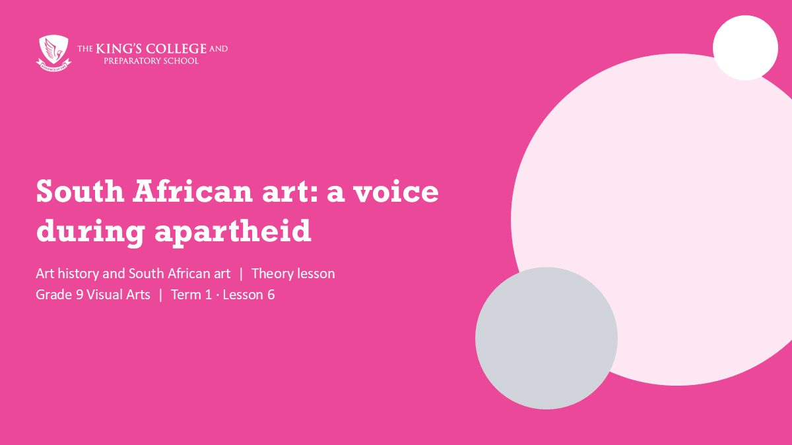

Term 1 · Lesson 6 · Practical lesson
Contour line drawing
Start here
Today I will
- Train my eye with blind contour drawing
- Make a careful modified contour drawing
- Use line weight to show form
Think first
Can you draw your own hand without looking at the paper at all? Try it for one minute.
Words to know
- Contour line
- A line that follows the outside edge and important inside edges of a form.
- Blind contour
- Drawing while looking only at the object, never at the paper.
- Modified contour
- Mostly looking at the object, with quick glances at the paper to check placement.
- Line weight
- How thick, thin, dark or light a line is.
- Cross-contour line
- Lines that travel across a form to show its curves.
Slides

Notes
Blind contour and modified contour drawing to train looking; line weight to show form.
Three kinds of contour drawing
- Blind contour: Eyes on the object only. Move the pencil slowly, as if touching the edge.
- Modified contour: Look at the object about 80% of the time; glance down to check where you are.
- Inside edges count: Draw folds, laces, seams and veins, not only the outline.
Line weight shows form
- Thick and dark: Edges in shadow, closest to you, or where objects overlap.
- Thin and light: Edges in the light, far away or fine details.
- Varied line: Changing weight along one line makes a flat outline feel 3D.
Remember
Draw what you see, not what you think you see.
Practical
You need: Newsprint, cartridge paper or journal, pencils, fineliners, a shoe or plant
Warm-ups and a modified contour drawing
- Warm-up 1: blind contour of your hand (3 minutes).
- Warm-up 2: blind contour of a partner's face or the object (4 minutes).
- Warm-up 3: blind contour of the object with your other hand (3 minutes), then label your warm-ups.
- Main drawing: lightly place the shoe or plant on the page so it fills most of the space.
- Draw a modified contour of the object in pencil, including the inside edges.
- Go over it with fineliner, using thick and thin lines to show form. No shading.
Assessment
Assessed (Term 1 practical): contour line drawing.
Test yourself
- What is the difference between blind and modified contour drawing?
- Where would you use a thicker line?
- Why do artists practise blind contour drawing?
Show answers
1. In blind contour you never look at the paper; in modified contour you glance at it now and then. 2. Edges in shadow, closer to you or where things overlap. 3. To train the eye and hand to follow what you really see.
Finished early?
Contour challenge
Train your eye with a few quick contour drawings of things on your desk.
- Choose an object with inside edges, such as your shoe, pencil case or crumpled tissue.
- Do a 2-minute blind contour drawing in your VJ.
- Do a 4-minute modified contour of the same object, including the inside edges.
- Go over the modified drawing with thick lines for shadow and overlaps and thin lines for edges in the light.